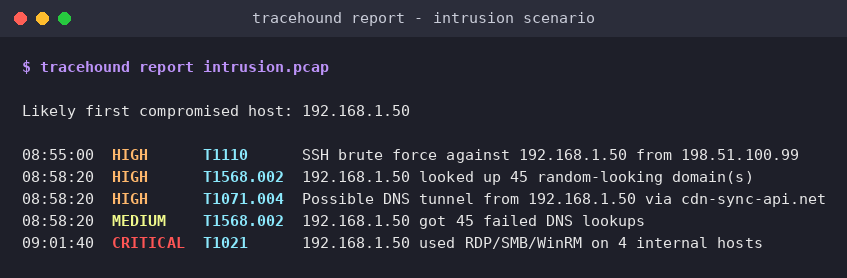
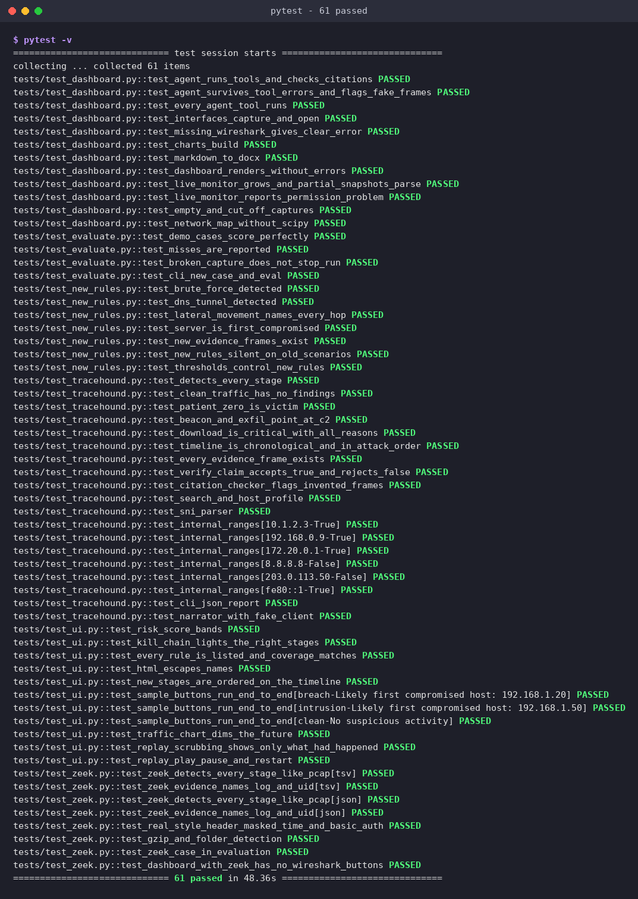

Why it exists
Wireshark shows you everything but tells you nothing. Existing AI integrations let a model query raw packets, but leave the investigation and the trust problem to the model. Commercial analysts are closed and enterprise-priced. Tracehound sits in between.
Detect first, explain second
Deterministic rules find the suspicious activity. The AI only explains what the rules found. It never guesses from raw packets.
Every claim cites evidence
Findings carry frame numbers. A verification tool and a citation checker reject anything the evidence does not support.
Index once, query fast
The capture is parsed once into DuckDB, so every follow-up question is a SQL query instead of a re-parse.
How it works
One pipeline from raw packets to an attack story.
tracehound dashboard - Streamlit app: charts, network map, chat with Claude, open frames in Wiresharktracehound report - Markdown or JSON report, no AI neededtracehound explain - Claude writes the narrative, citations are checkedtracehound-mcp - MCP server so Claude Desktop can investigate interactivelyWhat it detects
Ten rules across the kill chain, each mapped to a MITRE ATT&CK technique and each pointing at the exact frames that prove it.
| Rule | What it catches | MITRE ATT&CK |
|---|---|---|
suspicious_download | Executables and scripts over HTTP, scripted user-agents, requests to raw IPs | T1105 |
cleartext_credentials | Passwords in HTTP forms, Basic auth, FTP / POP3 / IMAP / SMTP / Telnet logins | T1552 |
suspicious_domains | High-entropy, random-looking domain names (with a CDN allowlist) | T1568.002 |
nxdomain_burst | Many failed DNS lookups from one host | T1568.002 |
beaconing | Outbound connections at machine-regular intervals | T1071 |
port_scan | Vertical scans and horizontal sweeps | T1046 |
data_exfiltration | Large, lopsided uploads from an internal host to an outside server | T1041 |
brute_forceNEW | Rapid repeated logins to SSH, RDP, SMB, FTP, databases, VNC or WinRM | T1110 |
dns_tunnelingNEW | Long, unique subdomains under one domain: data hidden in DNS queries | T1071.004 |
lateral_movementNEW | An internal host exchanging data with several others over SMB, RDP, WinRM, SSH or WMI | T1021 |
Tested
Every rule is tested against synthetic breaches hidden in normal browsing, and against clean traffic that must produce zero findings.

The intrusion scenario: SSH brute force, DNS tunnel and lateral movement detected, with the compromised server named as the first host.

The full test suite: 50 passed.
Dashboard
A Streamlit app that runs on your machine. It works on a saved capture or monitors live traffic.
- Timeline - findings by kill-chain stage and time, each with an Open in Wireshark button
- Findings - severity, MITRE technique, evidence packets and the exact Wireshark display filter
- Network map - who talked to whom, compromised paths in red
- Ask Claude - chat about the capture; Claude cites frames and invented ones are flagged
- Report - download an evidence report or a Claude-written incident report as Word or Markdown
Get started
Python 3.10 or newer.
Honest limits
- Validated on synthetic scenarios so far. Scores on real-world breach captures are the next milestone, and an evaluation harness is built in.
- Encrypted traffic: for HTTPS it sees who talked to whom, when and how much, not the content.
- Network view only: it cannot see processes, files or registry changes on hosts.